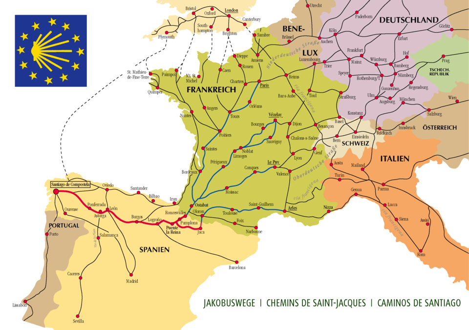

Camino de Santiago es la denominación que tiene un conjunto de rutas de peregrinación cristiana de origen medieval que se dirigen a la tumba de Santiago el Mayor, situada en la catedral de Santiago de Compostela (Galicia, España). Históricamente se ha conocido como «Camino de Santiago» (hoy denominado «Camino de Santiago francés») al itinerario principal que, partiendo de los Pirineos occidentales, recorre España hasta llegar a la ciudad gallega; no obstante, actualmente el término se utiliza para referirse a todas las rutas jacobeas existentes. Se trata de un «camino sembrado de numerosas manifestaciones de fervor, de arrepentimiento, de hospitalidad, de arte y de cultura, que nos habla de manera elocuente de las raíces espirituales del Viejo Continente».

Santiago el Mayor fue uno de los principales apóstoles de Jesucristo y el primero de ellos en morir martirizado. La tradición cristiana indica que su cadáver fue trasladado a Hispania y depositado en una tumba situada en Gallaecia. Esta fue descubierta sobre el año 820 entre los restos de un asentamiento romano abandonado y sobre ella se construyó un templo que fue ampliado en los siglos siguientes hasta convertirse en la actual catedral. (fuente: wikipedia)